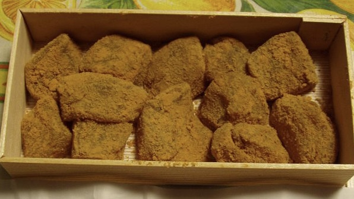

Warabi Mochi (わらび餅)
Warabi mochi is a type of traditional Japanese sweet, known as wagashi (和菓子). Where typical mochi is made from glutinous rice, warabi mochi is made of warabi (bracken) starch. It's chewy and covered in toasted soybean powder. This is one of my favorite treats.
Ingredients
Preparation
- Sprinkle some roasted soybean flour on a baking sheet.
- Combine the Warabi Mochiko, sugar, water, and mix.
- Heat the mixture over medium heat until it reaches a boil.
- Reduce the heat.
- With a wooden spatula, beat the mixture vigorously until it is thick and translucent.
- Remove the mixture from the heat and transfer to your baking sheet.
- Sprinkle more soybean flour on top and then let the mixture cool in the refrigerator for 30 minutes.
- After 30 minutes, remove from the refrigerator and slice into cubes.
- (Optional) Pour on brown sugar syrup.
- Enjoy!